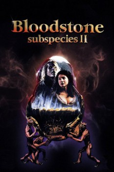

Country:United States, 87 minutes
Spoken languages:English, Romanian
Genres:Horror
Director(s):Ted Nicolaou
Writer(s):Ted Nicolaou
Video Codec:Unknown
Number: 3338

Certification:R
Storyline:
Continuing after the first "Subspecies", a woman who has just become a vampire tries to escape the evil vampire, Radu, who seeks her as his love interest. But she has taken the vampire family's bloodstone, and now Radu must find her to get it back. While her sister comes to Romania to save her soul. It might be too late....
Cast:
Anders Hove (as Radu Vladislas), Denice Duff (as Michelle Morgan), Ion Haiduc (as Lieutenant Marin), Michael Denish (as Popescu), Kevin Spirtas (as Mel)
Medium: Media file,
Location: D:\Subspecies\Bloodstone.Subspecies.2.mp4
Loaned: No
Aspect ratio: Unknown